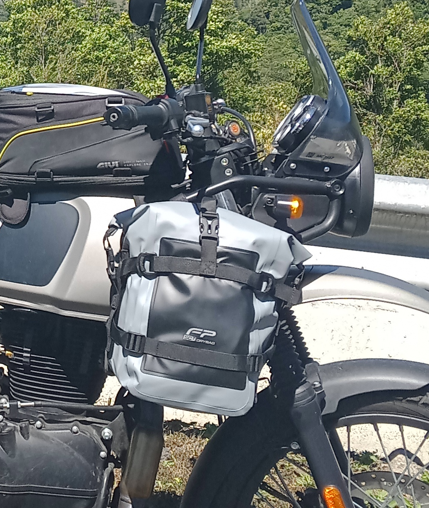

SIDE BAG REVIEW
FP 7 L Dry Bag

I bought these side bags whilst in Panama at the Royal Enfield dealer where I bough my bike from, they are from the same manufacturer as my stuffa bag and they cost about $70 each. I did not purposely buy grey coloured ones to match the colour of my bike, but they were all that were available and I do like the look of them.
The side bags have now been subjected to a great deal of exposure to prolonged heavy rain over the past few weeks and I must say that they have been 100% waterproof.
So far the fastenings are robust and fit for purpose. There are 2 straps that secure the bags to the bike. The top strap has D ring type fasteners which are very good and allow for quick securing and release to and from the bike. The bottom strap has a more conventional adjusting strap such as can be found on a rucksack. Whilst this is very secure it can be a little difficult to thread the strap in and out of the buckle, making getting this strap fastened a lot more time consuming than the top one.
My only negative observations about these bags are that I would have liked to have seen the D Ring type fastener used on both the top and the bottom straps on these bags but perhaps I am just being a little picky, however if this was the case the bags would be extremely easy and quick to fit to and remove from the bike.
I mount these bags to the front frame on my Himlayan and I tend to put my heavier items such as tools, spare inner tubes and such in them. I find that putting the heavier items in the side bags and mounting them near to the engine is better for the weight distribution of my luggage and prevents the panniers sagging down and possibly touching the exhaust.
In general I think that these side bags are of good quality and well designed albeit a little on the expensive side, and as I use them more I shall update this review as and when I have any further observations about them.
A link to the website where the FP bags specifications etc. can be viewed can be found in my “Useful Links” page of this website.